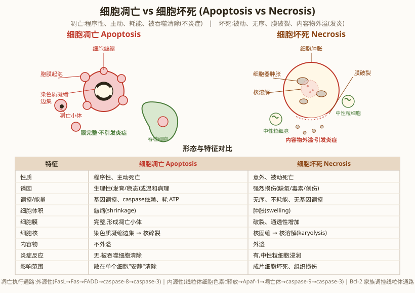
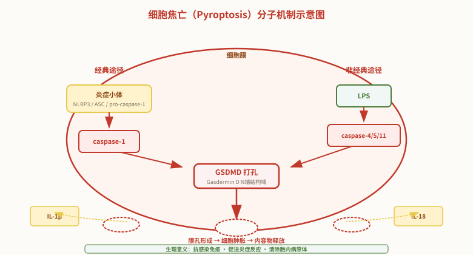
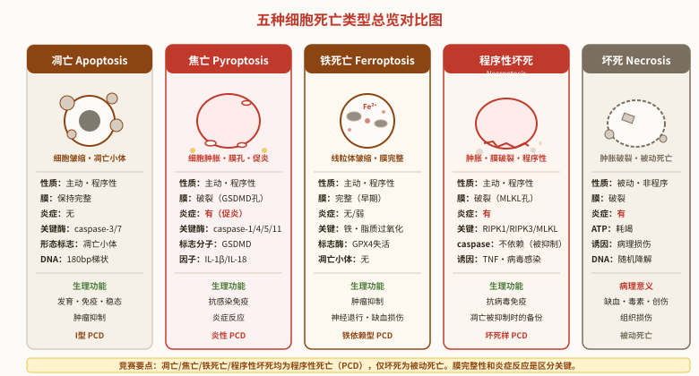
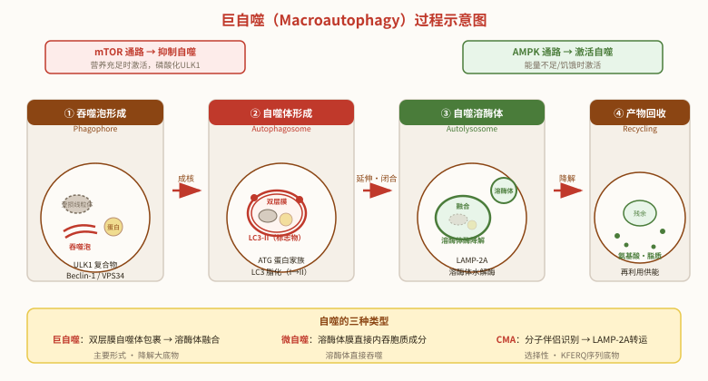
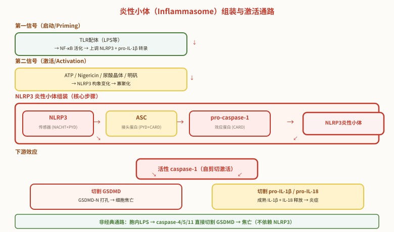

细胞的衰老与死亡
一、细胞成分与结构的更新
细胞是动态的生命系统，细胞内的各种成分和结构不断更新——旧的成分降解，新的成分合成。
蛋白质是细胞功能的主要执行者，蛋白质的更新主要通过两个系统：
- ① 溶酶体降解系统：长寿命蛋白、细胞器碎片通过自噬（autophagy）途径被溶酶体降解
- ② 泛素-蛋白酶体系统（ubiquitin-proteasome system, UPS）：短寿命蛋白、错误折叠蛋白、调控蛋白通过泛素标记后由 26S 蛋白酶体降解
泛素-蛋白酶体系统的工作流程：
- 泛素激活酶 E1 激活泛素（消耗 ATP）
- 泛素结合酶 E2 接收泛素
- 泛素连接酶 E3 识别靶蛋白，将泛素转移至靶蛋白赖氨酸残基
- 形成 K48 多聚泛素化标签（至少 4 个泛素分子）
- 26S 蛋白酶体识别泛素标签，将靶蛋白降解为短肽（5-20 个氨基酸）
- 泛素被释放和回收
26S 蛋白酶体结构：20S 核心颗粒（中空圆柱形，含 α 环和 β 环） + 19S 调节颗粒（盖子和底座）
细胞自噬（autophagy）：
- ① 巨自噬（macroautophagy）：双层膜自噬体包裹细胞器或蛋白聚集体 → 与溶酶体融合 → 降解
- ② 微自噬（microautophagy）：溶酶体膜直接内吞胞质成分
- ③ 分子伴侣介导的自噬（CMA）：Hsc70 等分子伴侣识别 KFERQ 序列的底物 → 通过 LAMP-2A 转运至溶酶体内
细胞内主要蛋白质的"半衰期"：组蛋白 ~ 3 天，细胞色素 c ~ 5 天，醛缩酶 ~ 12 小时，糖酵解酶系 ~ 12 小时。蛋白质的快速周转保证了细胞对环境的快速适应。
二、细胞的衰老
细胞衰老（cell senescence）是细胞内多种分子累积损伤导致细胞功能逐渐退化的过程，是生物体衰老的细胞学基础。
（一）细胞的寿限：
- ① Hayflick 界限（Hayflick limit）：1961 年 Hayflick 发现，正常人成纤维细胞在体外培养时只能分裂有限次数（约 50 次）后停止分裂。说明细胞也有"寿命"
- ② Hayflick 实验：取胎儿肺成纤维细胞连续培养 50 代左右停止分裂；成年人的成纤维细胞只能传代 20-30 次；老年人则更少（10 代左右）
- ③ 极限：不同物种的细胞分裂极限不同，与物种寿命正相关。人的极限约 50 次（2⁵⁰ ≈ 1.2 × 10¹⁵ 个细胞，足够人体一生使用）
不同类型细胞的寿命（成年小鼠）：
| 接近或等于动物整体寿命的细胞 | 缓慢更新的细胞 | 快速更新的细胞 |
|---|---|---|
| 神经元、心肌细胞、横纹肌细胞、骨细胞、肝细胞、肾细胞、肾上腺皮质细胞 | 胃壁细胞、皮肤表皮细胞、肠绒毛上皮细胞（5 天）、内皮细胞、结缔组织成纤维细胞 | 口腔和胃肠道上皮细胞（部分 1-3 天）、红细胞（120 天）、白细胞、血小板、毛囊细胞、角膜上皮细胞 |
生理性衰老 vs 病理性衰老 vs 心理性衰老：
- 生理性衰老：正常生命活动中的衰老（自然衰老）
- 病理性衰老：疾病引起的衰老（早衰症、Hutchinson-Gilford 早衰综合征）
- 心理性衰老：精神状态导致的衰老加速
（二）细胞衰老的分子机制——6 大理论：
1. 端粒学说（telomere theory）：
- 端粒（telomere）：染色体末端的 TTAGGG 重复序列 + 端粒结合蛋白
- 功能：保护染色体末端，防止降解和融合
- "末端复制问题"：DNA 半保留复制时，5' 端引物被切除后留下 3' 端缩短（8-12 bp/次分裂）
- 端粒酶（telomerase）：含 RNA 模板的逆转录酶，以自身 RNA 为模板合成端粒 DNA 重复序列
- 体细胞：端粒酶活性极低，端粒逐渐缩短 → Hayflick 界限
- 生殖细胞、干细胞、癌细胞：端粒酶活性高，端粒不缩短，可无限分裂
- 海弗利克：端粒缩短是细胞衰老的"分子钟"
2. 自由基理论（free radical theory）：
- 自由基（free radical）：含未配对电子的原子或分子。生物体内主要活性氧自由基：超氧阴离子 O₂⁻·、羟自由基 ·OH、过氧自由基 ROO·、单线态氧 ¹O₂
- 过氧化氢 H₂O₂ 虽不是自由基，但是重要的活性氧（ROS）
- 来源：线粒体呼吸链（电子漏出）、叶绿体光系统、酶促反应、辐射、污染物
- 伤害：① 膜脂过氧化（损伤膜结构）；② 蛋白质变性（-SH 氧化为 -S-S-）；③ DNA 损伤（8-氧代鸟嘌呤）；④ mtDNA 损伤（积累突变）
- 抗氧化系统：酶系统（SOD、CAT、POD、GPX）+ 物质系统（维生素 C、E、β-胡萝卜素、谷胱甘肽、半胱氨酸）
- 臭氧（O₃）也是氧化剂
3. 线粒体 DNA 损伤论：线粒体 DNA（mtDNA）是裸露的环状 DNA，缺乏组蛋白保护，靠近呼吸链产生大量自由基 → mtDNA 突变率高 → 编码的呼吸链复合物亚基异常 → 自由基产生更多 → 恶性循环
4. 细胞突变论：DNA 复制错误、辐射/化学物质引起的突变在细胞内累积 → 蛋白质异常 → 细胞功能失调
5. 错误成灾论（error catastrophe theory）：蛋白质合成的精确性下降（如 tRNA、氨酰-tRNA 合成酶的误差）→ 错误蛋白积累 → 进一步影响蛋白质合成精确性 → 错误雪崩式增加 → 细胞功能崩溃
6. 基因控制理论：衰老基因（senescence gene）激活、rRNA 转录和翻译功能丧失
其他相关机制：DNA 甲基化模式改变、染色体畸变、转座子激活、蛋白质错误修饰、溶酶体自噬下降、泛素-蛋白质降解系统功能降低。
（三）细胞衰老的形态学和代谢变化：
- ① 细胞核变化：核膜内折、染色质凝聚、固缩、碎裂、溶解；核内出现包含物
- ② 内质网变化：内质网排列无序、肿胀、空泡化；粗面内质网减少、核糖体脱落 → 蛋白质合成↓
- ③ 线粒体变化：线粒体数量减少、体积增大、嵴退化、mtDNA 突变积累 → 能量供应↓
- ④ 致密体（脂褐质）生成：在细胞质内积累的不溶性褐色色素颗粒，即"老年斑"，由脂质过氧化产物和溶酶体消化后的残渣组成
- ⑤ 膜系统变化：膜脂相变（液晶↔凝胶↔固相）→ 膜流动性↓、膜透性↑
- ⑥ 细胞水分减少：自由水/结合水比值↓，结合水相对增加（不溶性蛋白、晶体水）
其他代谢变化：ADP/ATP 转换能力↓、产能↓；不溶性蛋白质↑（如胶原蛋白交联）；色素积累（褐色素、脂褐质）；细胞间隙连接消失。
三、细胞凋亡（Apoptosis）
细胞凋亡（apoptosis）是由基因决定的细胞程序性死亡（PCD, programmed cell death）过程，是主动的、正常的生理性细胞死亡。
2002 年诺贝尔生理学或医学奖授予 Brenner、Sulston、Horvitz，表彰他们在细胞凋亡遗传机制研究中的贡献（线虫 C. elegans）。
（一）细胞凋亡的概念：
- 细胞凋亡是基因决定的程序性死亡，是正常的生命现象
- 凋亡是主动的生理过程，需要信号刺激和基因表达
- 凋亡过程是被精确调控的（启动、执行、清除）
（二）细胞凋亡的首要条件——信号刺激：
- 生理性信号：生长因子缺乏（如 NGF 撤除 → 神经元凋亡）、糖皮质激素、TNF 家族（Fas 配体）
- 病理性信号：DNA 损伤、氧化应激、病毒感染、癌基因激活
- 信号转导通路：死亡受体通路（Fas-FasL、TNF-TNFR）和线粒体通路（细胞色素 c 释放）
（三）细胞凋亡的形态学特征：
- 染色质固缩、凝集
- 核仁裂解、核膜破裂
- DNA 断裂（180 bp 倍数，形成"梯状条带"，是凋亡的特征）
- 细胞膜皱缩、微绒毛消失、细胞间连接消失
- 内折的胞膜包围染色体片段和细胞器 → 凋亡小体（apoptotic body）形成
- 凋亡小体被邻近细胞或巨噬细胞吞噬（无炎症反应，因为内容物不外泄）
（四）细胞凋亡的分子机制：
关键酶：半胱氨酸蛋白酶（caspase）家族。
caspase 是一组含半胱氨酸的蛋白酶，在 Asp 残基后切割靶蛋白：
- 启动 caspase：caspase-2、8、9、10（启动凋亡）
- 执行 caspase：caspase-3、6、7（执行凋亡）
两条主要通路：
- ① 内源性通路（线粒体通路）：DNA 损伤、氧化应激等 → Bcl-2 家族蛋白（促凋亡 Bax/ Bak vs 抗凋亡 Bcl-2/Bcl-xL）调控线粒体膜透性 → 细胞色素 c 释放 → 与 Apaf-1 形成凋亡体（apoptosome）→ 激活 caspase-9 → 激活 caspase-3/7 → 凋亡
- ② 外源性通路（死亡受体通路）：Fas 配体/Fas 受体结合 → FADD 接头蛋白 → 激活 caspase-8 → 直接激活 caspase-3/7 或切割 Bid 启动内源通路
细胞凋亡与疾病：
- 凋亡不足：肿瘤（细胞不死亡）、自身免疫病
- 凋亡过度：神经退行性疾病（阿尔茨海默病、帕金森病）、心肌梗死、卒中
- 凋亡异常是疾病发生的重要机制
（五）细胞凋亡的生物学意义：
- ① 胚胎发育：手指/脚趾间隙消失、蝌蚪尾巴消失、神经系统发育、视网膜发育
- ② 正常组织更新：清除衰老细胞、过剩细胞
- ③ 免疫系统：T 细胞成熟（清除自身反应 T 细胞）、B 细胞选择、清除病原体感染细胞
- ④ 肿瘤抑制：清除癌变细胞、突变细胞（p53 介导的"基因组卫士"机制）
（六）细胞凋亡与衰老的关系：
- 衰老细胞倾向于发生凋亡（p53 介导）
- 凋亡过少 → 衰老细胞累积 → 组织功能下降
- 凋亡过多 → 组织损伤（如神经退行性疾病）
四、细胞坏死（Necrosis）

细胞坏死是细胞在病理性刺激下发生的被动死亡，是非程序性的、混乱的死亡过程。
（一）细胞坏死的现象：
- ① 细胞肿胀、变形
- ② 细胞膜破裂（这是坏死的标志）
- ③ 内质网扩张、线粒体肿胀破裂
- ④ 溶酶体酶释放 → 细胞自溶
- ⑤ 细胞内容物释放，引发炎症反应（与凋亡的本质区别）
- ⑥ 染色体 DNA 随机降解（不是 180 bp 倍数）
（二）细胞坏死的机制：
- ① 病理性刺激（缺血、高温、机械损伤、化学毒物）
- ② ATP 浓度下降 → 离子泵失活 → Na⁺/Ca²⁺ 内流 → 细胞水肿
- ③ 膜脂质过氧化 → 膜破裂
- ④ 溶酶体破裂 → 蛋白酶释放 → 细胞自溶
- ⑤ PARP（聚 ADP 核糖聚合酶）过度激活 → NAD⁺耗竭 → ATP 枯竭
细胞凋亡 vs 细胞坏死的核心比较：
| 特征 | 细胞凋亡（apoptosis） | 细胞坏死（necrosis） |
|---|---|---|
| 诱因 | 生理性或病理性 | 病理性（损伤、缺血、毒素） |
| 性质 | 主动、程序性 | 被动、非程序性 |
| 能量需求 | 需要 ATP | 不需要 ATP |
| 细胞形态 | 皱缩、变小 | 肿胀、变大 |
| 细胞膜 | 保持完整 | 破裂 |
| 染色质 | 固缩、180 bp 梯状 | 随机降解 |
| 细胞器 | 完整 | 肿胀、破裂 |
| 凋亡小体 | 有（重要特征） | 无 |
| 炎症反应 | 无（被吞噬） | 有（内容物释放） |
| 对机体影响 | 有利（程序性清除） | 有害（引发炎症） |
| 关键分子 | caspase、Bcl-2、细胞色素 c | PARP、NAD⁺耗竭 |
五、细胞焦亡（Pyroptosis）

细胞焦亡（pyroptosis）是一种程序性的、炎症性的细胞死亡方式，区别于凋亡（无炎症）和坏死（非程序性），是机体抗感染免疫的重要机制。
（一）定义与发现：
- 2001 年由 Brennan 和 Cookson 首次提出 "pyroptosis" 一词（pyro = 火/热 + ptosis = 脱落），强调其促炎特性
- 属于程序性细胞死亡（PCD）的一种，但伴随强烈的炎症反应
- 主要发生在巨噬细胞、树突状细胞等免疫细胞中
（二）形态学特征：
- ① 细胞肿胀：细胞体积增大、膨胀（不同于凋亡的细胞皱缩）
- ② 细胞膜破裂：膜上形成孔洞，细胞膜完整性丧失（类似坏死）
- ③ 内容物释放：胞质内容物外溢，包括促炎细胞因子
- ④ 促炎症反应：释放 IL-1β、IL-18 等促炎因子，招募免疫细胞
- ⑤ DNA 损伤但非梯状：有 DNA 断裂，但不是典型的 180 bp 梯状条带
（三）分子机制——两条途径：
1. 经典途径（canonical pathway）：
- 炎症小体（inflammasome）：胞质内多蛋白复合物，由传感器（NLRP3、NLRC4、AIM2 等）、接头蛋白 ASC、效应蛋白 pro-caspase-1 组成
- 激活信号：病原体相关分子模式（PAMP，如细菌 LPS、鞭毛蛋白）、损伤相关分子模式（DAMP，如 ATP、尿酸结晶）
- 激活的 caspase-1 同时切割 pro-IL-1β 和 pro-IL-18，使其成熟并释放
2. 非经典途径（non-canonical pathway）：
- 人：caspase-4、caspase-5；小鼠：caspase-11
- 直接识别胞质内的 LPS（脂多糖），不依赖炎症小体
- 下游同样切割 GSDMD 形成膜孔
（四）核心执行分子——GSDMD：
- Gasdermin D（GSDMD）：焦亡的执行蛋白，含 N 端结构域（GSDMD-N，打孔活性）和 C 端结构域（GSDMD-C，自抑制）
- 静息状态：GSDMD-C 抑制 GSDMD-N 的活性
- 激活：caspase 切割 GSDMD 中间连接区 → 释放 GSDMD-N → 结合膜磷脂并寡聚化 → 形成直径约 10-20 nm 的膜孔
- 膜孔导致离子失衡、细胞肿胀、最终破裂
（五）生理意义与病理联系：
- ① 抗感染免疫：通过裂解被感染细胞+释放炎症因子，清除胞内病原体（细菌、病毒）
- ② 炎症性疾病：过度焦亡参与脓毒症、痛风、动脉粥样硬化、神经退行性疾病
- ③ 肿瘤：焦亡可抑制肿瘤发生发展，也可促进肿瘤炎症微环境
（六）焦亡与凋亡的区别对比：
| 特征 | 细胞凋亡（Apoptosis） | 细胞焦亡（Pyroptosis） |
|---|---|---|
| 性质 | 程序性细胞死亡（I型PCD） | 程序性细胞死亡（炎性PCD） |
| 关键酶 | caspase-3、-6、-7（执行型） | caspase-1、-4、-5、-11（炎性caspase） |
| 执行分子 | DNA酶、PARP等底物切割 | GSDMD 打孔 |
| 细胞形态 | 皱缩、变小 | 肿胀、变大 |
| 细胞膜 | 保持完整（形成凋亡小体） | 破裂（膜孔形成） |
| 凋亡小体 | 有 | 无 |
| 炎症反应 | 无（被吞噬清除） | 有（促炎因子释放） |
| DNA降解 | 180 bp梯状条带（特征性） | 随机断裂，非梯状 |
| 主要细胞 | 广泛存在于各种细胞 | 主要在巨噬细胞等免疫细胞 |
| 生理功能 | 发育、稳态、肿瘤抑制 | 抗感染免疫、炎症反应 |
| caspase抑制剂 | Z-VAD 可抑制 | 不被 Z-VAD 完全抑制（非经典途径） |
六、铁死亡（Ferroptosis）

铁死亡（ferroptosis）是一种铁依赖性的、由脂质过氧化驱动的程序性细胞死亡方式，在形态、生化和遗传上均不同于凋亡、坏死和自噬。
（一）发现与定义：
- 2012 年由 Stockwell 实验室正式命名（ferro = 铁 + ptosis = 死亡）
- 最初在筛选杀伤 RAS 突变肿瘤细胞的化合物时发现（erastin、RSL3）
- 核心特征：铁离子积累 + 脂质活性氧（lipid ROS）积累
- 铁死亡是一种调节性细胞死亡（RCD, regulated cell death），受精确的分子机制调控
（二）形态学特征：
- ① 线粒体皱缩：线粒体体积变小、膜密度增加、嵴减少或消失（最显著的形态特征）
- ② 细胞膜完整：早期细胞膜保持完整（不同于坏死的膜破裂）
- ③ 无凋亡小体：不形成凋亡小体（不同于凋亡）
- ④ 细胞核正常：核形态基本正常，无染色质固缩
- ⑤ 无自噬特征性空泡（早期）
（三）分子机制——三要素：
1. 铁代谢失调——铁积累：
- 细胞内游离 Fe²⁺ 浓度升高（铁稳态失衡）
- Fenton 反应：Fe²⁺ + H₂O₂ → Fe³⁺ + ·OH + OH⁻，产生高活性羟自由基（·OH）
- 铁来源：转铁蛋白受体介导的铁摄入、铁蛋白降解（ferritinophagy）释放铁
2. 脂质过氧化——核心驱动：
- 多不饱和脂肪酸（PUFA）：细胞膜磷脂中的 PUFA 是脂质过氧化的主要底物
- ROS（尤其是羟自由基 ·OH）攻击 PUFA → 脂质自由基 → 脂质过氧化物（PUFA-OH、MDA、4-HNE）
- 脂质过氧化链式反应：一个自由基可引发多个 PUFA 分子的过氧化（放大效应）
- 最终导致细胞膜结构破坏、通透性增加、细胞死亡
3. 抗氧化防御失效——GPX4 失活：
- System Xc⁻：细胞膜上的胱氨酸/谷氨酸逆向转运体，摄入胱氨酸（合成 GSH 的原料）
- GSH（谷胱甘肽）：细胞内主要抗氧化剂，GPX4 的必需辅因子
- GPX4（谷胱甘肽过氧化物酶4）：特异性降解脂质过氧化物的酶，是铁死亡的"守门人"
- GPX4 失活 → 脂质过氧化物无法清除 → 铁死亡
（四）诱导剂与抑制剂：
| 类别 | 代表物质 | 作用机制 |
|---|---|---|
| 诱导剂 | Erastin | 抑制 System Xc⁻ → 减少胱氨酸摄入 → GSH 耗竭 → GPX4 间接失活 |
| RSL3 | 直接结合并抑制 GPX4 活性（最经典的 GPX4 抑制剂） | |
| 抑制剂 | Ferrostatin-1（Fer-1） | 脂质自由基捕获剂（lipid radical scavenger），直接阻断脂质过氧化链反应 |
| 去铁胺（DFO, Deferoxamine） | 铁螯合剂，结合游离 Fe²⁺，抑制 Fenton 反应 |
（五）生理意义与病理联系：
- ① 肿瘤抑制：铁死亡可杀伤肿瘤细胞，尤其对 p53 介导的肿瘤抑制有重要作用
- ② 神经退行性疾病：帕金森病、阿尔茨海默病、亨廷顿病中均有铁死亡参与
- ③ 缺血再灌注损伤：心、脑、肾缺血再灌注时的组织损伤与铁死亡有关
- ④ 肝脏疾病：脂肪肝、肝纤维化、肝癌中均涉及铁死亡
- ⑤ 免疫系统：参与 T 细胞免疫应答、肿瘤免疫监视
（六）铁死亡与其他细胞死亡方式的区别：
| 特征 | 凋亡 | 焦亡 | 铁死亡 | 坏死 |
|---|---|---|---|---|
| 性质 | 程序性 | 程序性 | 程序性（调节性） | 非程序性 |
| 关键触发 | caspase-3/7 | caspase-1/4/5/11 + GSDMD | 铁 + 脂质过氧化 + GPX4↓ | ATP耗竭 |
| 细胞形态 | 皱缩、凋亡小体 | 肿胀、膜孔 | 线粒体皱缩 | 肿胀、膜破裂 |
| 细胞膜 | 完整 | 破裂（GSDMD孔） | 完整（早期） | 破裂 |
| 线粒体 | 正常→释放cyt c | 正常 | 皱缩变小（特征） | 肿胀破裂 |
| 炎症反应 | 无 | 有（促炎） | 无/弱 | 有 |
| DNA | 180bp梯状 | 非梯状断裂 | 无明显变化 | 随机降解 |
| 铁依赖 | 否 | 否 | 是（特征） | 否 |
| 特异性抑制剂 | Z-VAD-fmk | caspase-1抑制剂 | Fer-1、DFO | 无 |
七、程序性坏死（Necroptosis）
程序性坏死（necroptosis）是一种程序性的、具有坏死形态学特征的细胞死亡方式——虽然形态像坏死，但由特定的信号通路调控，属于调节性细胞死亡（RCD）。
（一）定义与发现：
- 1980 年代发现某些情况下，即使 caspase 被抑制，TNF 仍可诱导细胞死亡
- 2005 年 Yuan 实验室正式提出 "necroptosis" 概念，并发现 Necrostatin-1（Nec-1）可特异性抑制
- 形态上与坏死相似（细胞肿胀、膜破裂），但机制上受精确调控
- 关键特征：caspase 非依赖 + 坏死样形态
（二）分子机制——RIPK1/RIPK3/MLKL 通路：
- RIPK1（受体相互作用蛋白激酶1）：信号整合分子，参与细胞存活、凋亡、程序性坏死的命运决定
- RIPK3（受体相互作用蛋白激酶3）：程序性坏死的关键激酶，与 RIPK1 形成 坏死小体（necrosome）
- MLKL（混合谱系激酶结构域样蛋白）：程序性坏死的执行分子，被 RIPK3 磷酸化后寡聚化 → 转位到细胞膜 → 形成膜孔 → 细胞破裂
（三）凋亡 vs 程序性坏死的切换：
- 正常情况：TNF + TNFR → 激活 NF-κB（促存活）或激活 caspase-8（凋亡）
- 当 caspase-8 被抑制时（如病毒蛋白 vICA/crmA 抑制 caspase-8），细胞转向程序性坏死
- RIPK1 的不同修饰（泛素化、磷酸化）决定细胞命运：存活 / 凋亡 / 程序性坏死
- caspase-8 通常切割 RIPK1/RIPK3 抑制程序性坏死——所以 caspase 被抑制时程序性坏死才发生
（四）形态学特征：
- ① 细胞肿胀（与坏死相似，与凋亡的皱缩相反）
- ② 细胞膜破裂（与坏死相似）
- ③ 细胞器肿胀、内质网扩张
- ④ 细胞内容物释放 → 引发炎症反应
- ⑤ 细胞核形态基本正常（无固缩、无梯状 DNA）
- ⑥ 无凋亡小体
（五）生理意义与病理联系：
- ① 抗病毒免疫：病毒常编码 caspase 抑制剂（如痘病毒 crmA）以阻止凋亡，程序性坏死作为"备份"机制清除被感染细胞
- ② 抗菌免疫：参与抵抗某些胞内病原体
- ③ 炎症性疾病：参与系统性炎症反应综合征（SIRS）、炎症性肠病、银屑病
- ④ 缺血再灌注损伤：心、脑、肾等器官缺血再灌注损伤
- ⑤ 肿瘤：在肿瘤发生发展中具有双重作用
（六）五种细胞死亡方式的全面比较：
| 特征 | 凋亡 | 焦亡 | 铁死亡 | 程序性坏死 | 坏死 |
|---|---|---|---|---|---|
| 类型 | I型PCD | 炎性PCD | 调节性死亡 | 坏死样PCD | 被动死亡 |
| 程序性 | 是 | 是 | 是 | 是 | 否 |
| 关键分子 | caspase-3/7 | caspase-1 + GSDMD | GPX4 + 铁 | RIPK3 + MLKL | ATP耗竭 |
| 细胞形态 | 皱缩·凋亡小体 | 肿胀·膜孔 | 线粒体皱缩 | 肿胀·膜破裂 | 肿胀·膜破裂 |
| 细胞膜 | 完整 | 破裂（GSDMD） | 完整（早期） | 破裂（MLKL） | 破裂 |
| 炎症 | 无 | 强（IL-1β/18） | 无/弱 | 有 | 有 |
| caspase依赖 | 是 | 是（炎性caspase） | 否 | 否 | 否 |
| 特异性抑制剂 | Z-VAD | caspase-1抑制剂 | Fer-1、DFO | Nec-1（RIPK1） | 无 |
| 主要生理功能 | 发育·免疫·肿瘤 | 抗感染 | 肿瘤抑制 | 抗病毒 | 病理损伤 |

八、细胞自噬深化与自噬性细胞死亡

细胞自噬（autophagy）是真核细胞中通过溶酶体降解自身成分的保守过程。适度自噬是细胞的自我保护机制；过度激活则导致 自噬性细胞死亡（II型程序性死亡）。
（一）自噬的三种类型：
| 类型 | 巨自噬（Macroautophagy） | 微自噬（Microautophagy） | 分子伴侣介导的自噬（CMA） |
|---|---|---|---|
| 特点 | 最主要形式，双层膜包裹 | 溶酶体膜直接内吞 | 分子伴侣识别后转运 |
| 底物 | 细胞器、蛋白聚集体、病原体 | 胞质可溶性成分、小颗粒 | 含 KFERQ 序列的可溶性蛋白 |
| 关键结构 | 自噬体（autophagosome） | 溶酶体内陷 | LAMP-2A 转运通道 |
| 分子伴侣 | 不依赖（非选择性） | 不依赖 | Hsc70 等分子伴侣 |
| 选择性 | 可选择（如线粒体自噬） | 非选择性 | 高度选择性 |
| 主要功能 | 饥饿应答、清除大底物 | 溶酶体直接吞噬 | 选择性降解可溶性蛋白 |
（二）巨自噬的过程——四阶段：
- ① 启动/成核阶段：
- 信号：饥饿、缺氧、能量不足 → mTOR 抑制 / AMPK 激活
- ULK1 复合物（ULK1 + Atg13 + FIP200）激活 → 启动自噬
- Beclin-1 / VPS34 复合物产生 PI3P → 形成吞噬泡（phagophore）
- ② 延伸阶段：
- 两条泛素样结合系统：Atg12-Atg5-Atg16L 复合物 + LC3 脂化系统
- LC3（微管相关蛋白轻链3）：胞质型 LC3-I → 脂化型 LC3-II（结合到自噬体膜上）
- LC3-II 是自噬体的经典标志物
- 吞噬泡不断延伸 → 闭合形成完整的双层膜自噬体
- ③ 融合阶段：
- 自噬体外膜与溶酶体膜融合 → 自噬溶酶体（autolysosome）
- 自噬体内膜及内容物暴露于溶酶体酶
- ④ 降解与回收阶段：
- 溶酶体水解酶降解内容物 → 氨基酸、核苷酸、脂质、糖类
- 降解产物通过通透酶转运回胞质 → 重新利用（循环供能）
（三）关键分子——ATG 蛋白家族：
- ATG（autophagy-related gene）：自噬相关基因，目前已发现 40 余种 ATG 基因
- ULK1/Atg1 复合物：自噬启动的最上游激酶
- Beclin-1/Atg6：PI3K 复合物亚基，参与成核
- Atg5、Atg7、Atg12、Atg16L：参与泛素样结合系统
- LC3/Atg8：自噬体膜标记物（最常用的自噬检测指标）
- Atg9：跨膜蛋白，参与膜运输
（四）调控通路——两大核心：
| 调控通路 | 作用 | 激活条件 | 关键分子 |
|---|---|---|---|
| mTOR 通路 | 抑制自噬 | 营养充足、生长因子刺激 | mTORC1 → 磷酸化 ULK1 → 失活 |
| AMPK 通路 | 激活自噬 | 能量不足（AMP/ATP↑）、饥饿 | AMPK → 磷酸化 ULK1 → 激活 |
- mTOR（哺乳动物雷帕霉素靶蛋白）：自噬的"刹车"——营养充足时踩刹车，饥饿时松开
- AMPK（AMP 激活的蛋白激酶）：自噬的"油门"——能量不足时踩油门
- 雷帕霉素（rapamycin）：mTOR 抑制剂 → 诱导自噬（实验常用自噬诱导剂）
- 3-MA（3-甲基腺嘌呤）：PI3K 抑制剂 → 抑制自噬（实验常用自噬抑制剂）
（五）选择性自噬：
- 线粒体自噬（mitophagy）：选择性清除受损线粒体（PINK1/Parkin 通路）
- 内质网自噬（reticulophagy）：清除受损内质网
- 过氧化物酶体自噬（pexophagy）：清除过氧化物酶体
- 异体自噬（xenophagy）：清除入侵的病原体（细菌、病毒）
- 选择性自噬通过自噬受体（如 p62/SQSTM1）识别底物并连接 LC3
（六）生理功能与病理意义：
- ① 饥饿应答：营养缺乏时降解自身成分提供能量和原料（最原始功能）
- ② 质量控制：清除错误折叠蛋白、受损细胞器（维持细胞稳态）
- ③ 防御病原体：异体自噬清除胞内菌、病毒
- ④ 发育与分化：参与细胞重塑、形态发生（如蝌蚪尾巴退化）
- ⑤ 衰老与长寿：自噬功能随衰老下降；增强自噬可延长模式生物寿命
- ⑥ 肿瘤：自噬在肿瘤中具有双重作用——早期抑制肿瘤，晚期促进肿瘤存活
（七）自噬性细胞死亡（II型 PCD）：
- 当自噬过度激活 → 过度降解必需细胞器和蛋白 → 细胞死亡
- 形态特征：胞质内大量自噬体和自噬溶酶体积累，细胞核变化不明显（早期）
- 与凋亡的区别：无 caspase 激活、无凋亡小体、无染色质固缩
- 注意：自噬性细胞死亡在发育中较少见，更多是自噬先于凋亡发生，或与凋亡协同
自噬与其他细胞死亡方式的比较：
| 特征 | 凋亡（I型） | 自噬性死亡（II型） | 焦亡 | 铁死亡 | 坏死 |
|---|---|---|---|---|---|
| 关键分子 | caspase-3/7 | ATG、Beclin-1、LC3 | GSDMD、caspase-1 | GPX4、铁 | ATP耗竭 |
| 细胞形态 | 皱缩、凋亡小体 | 自噬体大量积累 | 肿胀、膜孔 | 线粒体皱缩 | 肿胀、破裂 |
| 膜完整性 | 完整 | 完整（早期） | 破裂 | 完整（早期） | 破裂 |
| 炎症 | 无 | 无 | 有（强） | 无/弱 | 有 |
| 溶酶体 | 不参与 | 核心参与 | 不参与 | 不参与 | 破裂释放酶 |
GSDMD在细胞焦亡中的详细机制（GGBO竞赛前沿）
GSDMD（Gasdermin D）的结构与激活：
- GSDMD结构：全长GSDMD由N端结构域（GSDMD-N）和C端结构域（GSDMD-C）组成。在静息状态下，GSDMD-C通过自抑制机制与GSDMD-N结合，阻止其寡聚化和膜打孔活性。
- Caspase切割激活：炎症性caspase（caspase-1/4/5/11）在GSDMD的N端和C端之间的连接区进行切割，释放具有打孔活性的GSDMD-N片段。GSDMD-C片段被释放后不参与孔道形成。
- GSDMD-N的寡聚化：被切割释放的GSDMD-N片段在细胞膜内侧发生寡聚化，形成四聚体（tetramer）等寡聚体形式。GSDMD-N四聚体插入细胞膜，形成直径约10-20 nm的孔道。注意：只有GSDMD-N片段发生寡聚化，GSDMD-C片段不参与寡聚化。
GSDMD孔道的功能：
- ①细胞膜孔道形成→细胞内外离子平衡破坏→水分子内流→细胞肿胀→细胞膜破裂→细胞内容物释放。
- ②孔道介导IL-1β和IL-18等促炎细胞因子的成熟形式释放到胞外，引发强烈的炎症反应。
- ③GSDMD打孔不是简单的"爆破"，而是受调控的寡聚化过程，类似于MLKL在程序性坏死（necroptosis）中的寡聚化打孔机制。
GSDMD研究的实验方法（GGBO考点）：
- 使用不同浓度Nig（nigericin，尼日利亚菌素，NLRP3炎性小体激活剂）诱导焦亡→通过Flag标签免疫印迹检测GSDMD的寡聚化状态。
- 若使用野生型细胞回补带有Flag标签的GSDMD，内源GSDMD蛋白会与外源Flag-GSDMD竞争结合caspase-1，导致外源GSDMD剪切效率下降。同时内源蛋白会与外源蛋白混合形成异源寡聚体，无法区分内外来源蛋白。
炎性小体（Inflammasome）的组装和激活（GGBO竞赛前沿）
炎性小体的定义与组成：
- 炎性小体（Inflammasome）是细胞内多蛋白复合物，由模式识别受体（PRR）、接头蛋白ASC和效应蛋白caspase-1前体组装而成。是先天性免疫系统的核心组分。
- 主要类型：①NLRP3炎性小体（最经典，被多种DAMPs/PAMPs激活）；②NLRP1炎性小体；③NLRC4炎性小体；④AIM2炎性小体（识别胞质dsDNA）；⑤Pyrin炎性小体。
NLRP3炎性小体的经典激活通路：
- 第一信号（启动信号/Priming）：TLR配体（如LPS）→NF-κB活化→上调NLRP3和pro-IL-1β的转录水平。
- 第二信号（激活信号/Activation）：多种刺激（ATP、尼日利亚菌素Nigericin、尿酸晶体、明矾等）→NLRP3构象变化→NLRP3通过NACHT结构域寡聚化→通过PYD结构域招募ASC→ASC通过CARD结构域招募pro-caspase-1→形成NLRP3炎性小体→pro-caspase-1自剪切激活→活性caspase-1。
- 下游效应：活性caspase-1→①切割GSDMD→GSDMD-N打孔→细胞焦亡；②切割pro-IL-1β和pro-IL-18→成熟IL-1β和IL-18释放。
非经典焦亡通路：
- 胞内LPS直接结合并激活caspase-4/5（人）或caspase-11（小鼠）→这些caspase直接切割GSDMD→焦亡。此通路不依赖NLRP3炎性小体，但GSDMD打孔后钾离子外流可以间接激活NLRP3炎性小体导致IL-1β成熟。

TDP-43在液-液相分离（LLPS）中的作用（GGBO竞赛前沿）
TDP-43的结构域与功能：
- TDP-43（TAR DNA-binding protein 43）是一种RNA结合蛋白（RBP），由414个氨基酸组成，包含以下结构域：
- ①NTD（N端结构域）——介导TDP-43的寡聚化；②RRM1和RRM2（RNA识别基序）——负责结合RNA/DNA；③IDR1和IDR2（内在无序区）——富含甘氨酸、丝氨酸等，是液-液相分离（LLPS）的关键区域；④CR（C端区域）——包含保守的螺旋结构，富含疏水氨基酸，是LLPS的核心驱动区域。
TDP-43的液-液相分离（LLPS）：
- LLPS定义：蛋白质在特定条件下从溶液中分离出来，形成高浓度的液滴状凝聚体，类似于油滴在水中的分离。LLPS是形成无膜细胞器（如应激颗粒、P小体等）的物理基础。
- TDP-43的LLPS驱动力：CR区（C端区域）的疏水氨基酸和IDR区的低复杂度序列通过弱多价相互作用（π-π堆积、疏水作用、静电作用等）驱动液-液相分离。完整的CR是出现正常LLPS的必要条件。
- 病理意义：TDP-43的C端结构域突变（如ALS相关突变）可能改变LLPS性质，使液滴从可逆的动态状态转变为不可逆的固态聚集（淀粉样纤维），这被认为是肌萎缩侧索硬化症（ALS）和额颞叶痴呆（FTD）的病理机制之一。
GGBO实验分析：
- 删除CR区→LLPS消失；删除IDR1或IDR2→LLPS减弱但未完全消失。说明CR+IDR1或IDR2是LLPS的充分条件，而完整的CR是必要条件。
- DIC显微镜（微分干涉相差显微镜）可用于观察液滴形成。
第三节核心要点回顾：
- 细胞成分更新：UPS（短寿命蛋白）+ 溶酶体（长寿命/自噬）。E1-E2-E3 泛素化系统
- 细胞衰老：Hayflick 界限 50 次。端粒学说（端粒酶 + 端粒缩短）+ 自由基理论 + mtDNA 损伤论等 6 大理论
- 细胞衰老的形态学变化：核+内质网+线粒体+致密体（脂褐质）+膜相变+水分减少
- 细胞凋亡（apoptosis）：I型 PCD，主动死亡。caspase 家族为关键酶。两条通路：内源（线粒体-细胞色素 c）+ 外源（死亡受体 Fas-FasL）。2002 年诺奖
- 细胞坏死（necrosis）：病理性被动死亡，膜破裂→炎症。ATP 耗竭导致
- 细胞焦亡（pyroptosis）：炎性 PCD。caspase-1/4/5/11 → GSDMD 打孔 → IL-1β/IL-18 释放。经典途径+非经典途径
- 铁死亡（ferroptosis）：铁依赖 + 脂质过氧化驱动。GPX4 是守门人。Stockwell 2012 年命名。诱导剂 erastin/RSL3，抑制剂 Fer-1/DFO
- 程序性坏死（necroptosis）：坏死样 PCD。RIPK1 → RIPK3 → MLKL → 膜破裂。caspase-8 被抑制时启动。抗病毒免疫
- 自噬性细胞死亡：II 型 PCD。mTOR-ULK1-Beclin-1-LC3 通路。2016 年诺奖（大隅良典）。三大类型 + 选择性自噬
- 5种死亡对比：凋亡/焦亡/铁死亡/程序性坏死/自噬性死亡均为程序性，仅坏死为被动。膜完整性和炎症反应是关键区别点